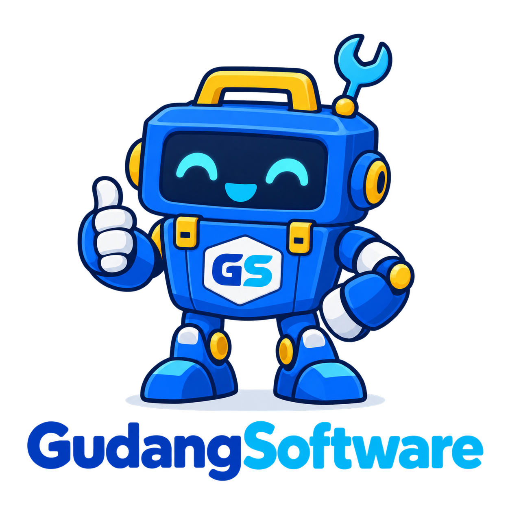

🗜️
Kompres Gambar
Atur kualitas dan perkecil ukuran file.
JPG, PNG, atau WEBP · maksimal sesuai kemampuan perangkat

Coba gratisTemukan alat yang Anda butuhkan dan gunakan langsung dari browser.
Alat praktis yang paling sering dibutuhkan untuk pekerjaan sehari-hari.
Tentukan pekerjaan yang ingin diselesaikan.
Semua diproses aman di browser Anda.
Salin atau unduh hasilnya seketika.